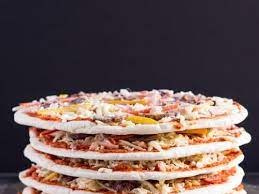

Frozen Pizza

Description
A staple of the home for a Saturday night filled with American football! This simple yet delicious dish is considered a tried and true classic. Some would even consider it to be better than delivery.
You will find both the ingredient list and steps to create this wonderful dish below.
Ingredients
Steps
- Read the instructions on the box
- Preheat the oven to the listed temperature
- Remove the pizza from the container and place in oven
- Cook the pizza, but not for too long
- Remove the pizza from the oven and let cool
- Cut the pizza into slices or enjoy whole!